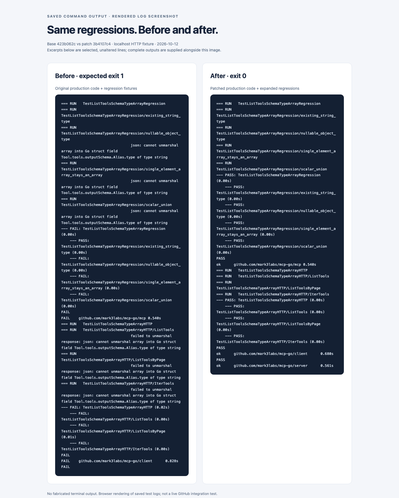

MCP-GO · ISSUE #1075 · FIX & VALIDATION
Keep schema type arrays intact.
I reproduced a tools/list decoding failure with a nullable output schema, then kept the existing string API while adding an explicit array representation.
Validated 2026-10-12 · macOS arm64 · Go 1.26.3 and CI Go 1.25.5
Base: 423b062c4db141021c908c2b6ddc1ef88b584403
Patch: 3b4107c4cdf24100ae1864df025f828d87f54f7b
Before: 6 regression cases failAfter: focused tests passConformance: 2 baseline failures
What was breaking
outputSchema.type = ["object", "null"] is an array-valued JSON Schema type. The Go decoder expected a string, so a single tool with that shape caused the entire listing to fail. Dropping the null branch or coercing the array to object would lose the server’s schema intent.
References: issue #1075 · MCP tool schemas · JSON Schema type forms.
The change, from wire to validation
1 · tools/list responsetype is a string or an array.
One malformed decode used to fail the listing.
→2 · Shared schema decoderRawMessage discriminates the shape.
String → Type
Array → Types
→3 · Marshal / tool presenceRe-emit the same type form.
Array-only output stays present.
Raw conflicts remain errors.
→4 · Server validationArray-only input/output schemas are recognized and compiled, rather than treated as absent.
Both input and output schemas share ToolArgumentsSchema. No transport or protocol negotiation changes, and no new dependencies.
Why I kept two fields
I kept Type string so existing string assignments and comparisons continue to work. The new Types []string stores an array-valued type, even a single-element array. Decoding one form clears the other; if callers explicitly set a non-empty Type, it takes precedence.
My local self-check caught one extra interaction: generated and cached input-schema options replace a structured schema with raw JSON. They now clear Types as well as Type. A regression test covers both paths.
Scope is deliberately narrow. This does not preserve arbitrary top-level schema keywords, solve #1007/#1008, or claim full JSON Schema / latest MCP compliance. Adding an exported field can affect external unkeyed struct literals; keyed string-field usage remains unchanged.
What I tested
- String types, nullable object types, scalar unions, and single-element arrays survive JSON round trips.
- ListTools, ListToolsByPage, and IterTools each receive both tools through a real localhost HTTP server, preserve the union output schema, and successfully call get_me.
- Input schema round trips retain nested property types, required keys, and additionalProperties.
- Repeated decoding clears stale representation fields; malformed numeric, boolean, object, and mixed-array shapes return errors.
- Structured/raw schema conflicts are still rejected. Generated and cached schema replacement clears old array types.
- Server schema extraction and compilation accept object/null and reject a string for array-only input and output schemas.
The HTTP server is a deterministic local fixture. I did not test the live GitHub MCP service, credentials, or an LLM provider. Null acceptance is tested at the schema compiler layer; existing nil structured-result skip behavior is unchanged.
| Check | Command | Observed result / raw log |
|---|
| Focused regression tests | go test ./mcp ./client ./server -run 'Test(ListToolsSchemaTypeArray|SchemaTypeArray)' -count=1 -v | PASS |
| Full root module / race | go test ./... -race -count=1 | PASS · Go 1.26.3 |
| Independent OTel module / race | (cd otel && go test ./... -race -count=1) | PASS · Go 1.26.3 |
| CI Go version / root race | GOTOOLCHAIN=go1.25.5 go test ./... -race -count=1 | PASS |
| CI Go version / OTel race | (cd otel && GOTOOLCHAIN=go1.25.5 go test ./... -race -count=1) | PASS |
| Static analysis / both modules | go vet ./...; (cd otel && go vet ./...) | Exit 0 · no output |
| Lint / both modules | golangci-lint v2.8.0 run | 0 issues |
| Build | go build ./... | Exit 0 · no output |
| Generated source | go generate ./...; git status --porcelain | Exit 0 · clean tree |
| Conformance checker unit tests | python3 -m unittest discover -s scripts -p 'test_*.py' | 5 tests passed |
| Official active conformance suite | python3 scripts/check_conformance.py --url http://127.0.0.1:33175/mcp --baseline conformance/server/expected-failures.yml | 28/30 · expected baseline failures only |
Conformance CLI: @modelcontextprotocol/conformance@0.1.16. The active suite passed 28/30. Existing logging/progress notification scenarios each failed 6 of 10 repeat runs; the repository’s baseline checker exited 0. This is not an all-30-pass claim.
Before / after evidence
On the untouched base, the string control passes and six array regression cases fail (three codec cases + three HTTP client entry points). On the patched branch, all focused tests pass. The baseline copy contains only regression test fixtures, not the fix.
Open readable log excerpts · Complete baseline output · Complete patched output

Screenshot provenance: Chromium renders saved command output, without editing test result lines. This is a log screenshot, not a GUI test or live GitHub screenshot.